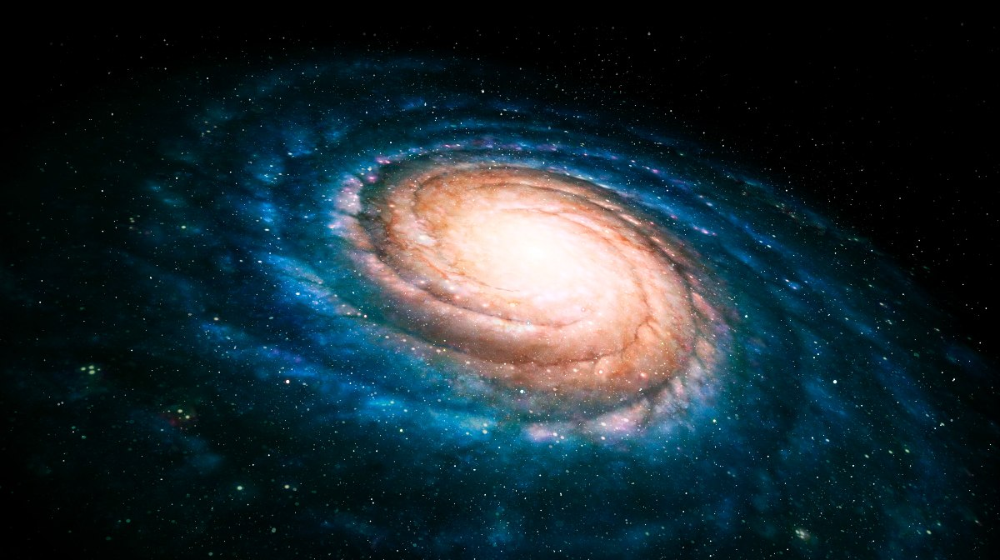

Descubriendo los Secretos del Cerebro Humano
Explorando los Rincones Inexplorados de Nuestra Mente
Autor: Dr. María Rodríguez | Fecha de Publicación: 15 de Febrero
de 2024
El cerebro humano es un órgano fascinante y complejo
que ha desconcertado a científicos durante siglos...
Las imágenes del estudio, que capturan neuronas en proceso de conexión,
ofrecen una visión asombrosa de la actividad cerebral...
Energía Renovable: Un Futuro Sostenible
Transformando Nuestra Dependencia Energética
Autor: Ing. Javier Gómez | Fecha de Publicación: 20 de Febrero de
2024
La crisis climática ha puesto de manifiesto la necesidad urgente de
transicionar hacia fuentes de energía más sostenibles...
Las imágenes que ilustran el crecimiento de las
energías renovables destacan la importancia de estas
tecnologías...

Descubriendo el Mundo
Explorando los Secretos del Universo
Autor: Ing. David Martinez | Fecha de Publicación: 24 de Febrero de
2022
La teoría del Big Bang sugiere que el universo comenzó como una singularidad y ha estado expandiéndose desde entonces. Los científicos buscan comprender lo que sucedió en los primeros momentos del universo....
¿Y si el entrelazamiento cuántico fuera la clave para comprender los agujeros de gusano? algunas imágenes que ilustran
